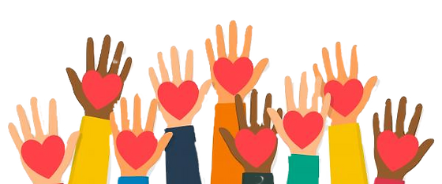

Take Action
Illustration by Image Zoo/Corbis
Be Educated
Credits to Texas A&M Today
To learn about poverty, educate yourself and others around you about the issue and how they can help. Schools should expose students more to conditions of others that might be much different from their own. By understanding others' problems, we can build off on what to do as a society to help solve these issues.
Speak Up
Credits to CPO Magazine
Since our generation heavily focuses on technology, use social media to raise awareness on poverty, period poverty, sexual exploitation, child labor, and more issues around the world. We can sign petitions and speak up about what needs to be changed. We can participate in protests and call for changes in which the government can be more alerted about these issues. Furthermore, we can also write to our local officials like senators or governors to focus on this issue more.
Fund, Donate, Volunteer
Credits to Underdog Animal Rescue
We can take action by funding, donating, and volunteering for trustworthy organizations. We can help the world and our communities by simply helping out one another and giving back to those in need. Some organization you can look into are, but not limited to: